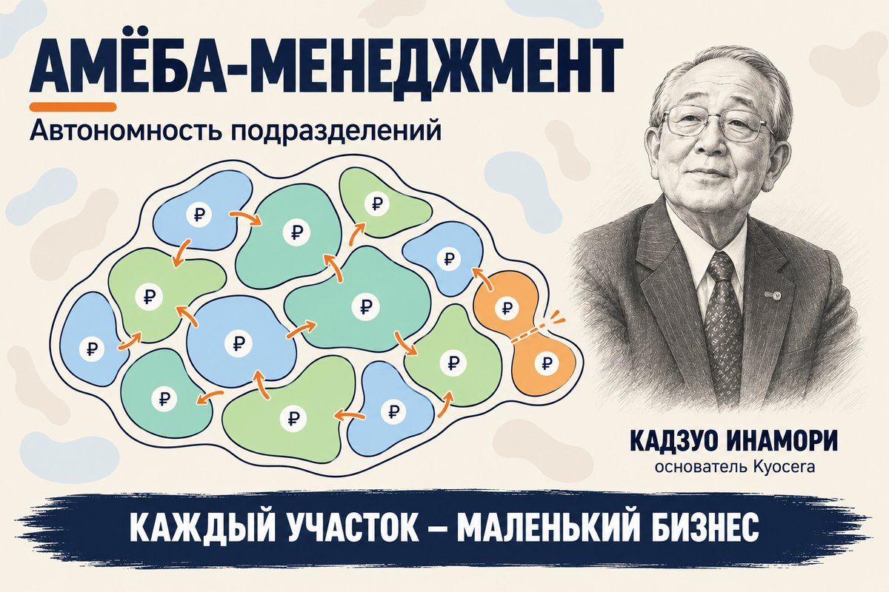

Амёба-менеджмент: автономность подразделений
Продолжаем серию статей о системах управления компаниями. Следующая пара — открытость и вовлечение: амёба-менеджмент Кадзуо Инамори и «Большая игра в бизнес» Джека Стэка. Эти системы не так популярны, но мне нравятся идеи, которые в них заложены. Возможно, здесь они доведены до предела, но как иллюстрация того, что идеи работают, обе системы выглядят очень убедительно.
Сначала разберём амёба-менеджмент, а затем отдельной статьёй рассмотрим «Большую игру в бизнес» и сравним два подхода.
Мне близка мысль, что чем больше в компании подразделений, отвечающих за прибыль, тем легче ею управлять. У генерального директора появляется больше единомышленников, которые заинтересованы в итоговой прибыли компании, и меньше проблем с согласованием целей.
Эта мысль хорошо передана у Адизеса, когда он рассказывает про построение структур и выделяет три типа подразделений: зелёные отвечают за прибыль, жёлтые — за внутреннюю прибыль, красные — за расходы.
Амёба-менеджмент берёт похожую идею и доводит её до предела.

Как появились амёбы
Систему изобрёл Кадзуо Инамори, основатель Kyocera — компании, которая сегодня входит в первую десятку мировых производителей принтеров и МФУ.
Инамори был инженером, и когда в 1959 году он вместе с коллегами создал компанию в Киото, управленческого опыта у него не было. Компания росла, а он по-прежнему сам вёл разработку, ездил к клиентам и разбирал брак в цеху, пока не понял, что не тянет.
Он стал искать, кому передать часть дел. Людей, способных вести компанию в сотню человек, рядом не было. Зато были те, кто мог отвечать за двадцать-тридцать. Тогда он и принял решение, с которого началась вся система: разделить компанию на маленькие подразделения и сделать каждое ответственным за собственную выручку, расходы и прибыль. Впоследствии их назвали амёбами — за способность делиться и менять форму.
Инамори определил три цели такого деления:
- компания начинает чувствовать рынок в каждой точке, потому что у подразделения есть свои доходы и расходы и сразу видно, где она зарабатывает, а где теряет;
- компания выращивает руководителей, потому что амёба — это маленький бизнес, и тот, кому его доверили, учится управлять;
- в управлении участвуют все сотрудники: люди в амёбе вместе с руководителем ставят цели на месяц и видят по цифрам, что дала их работа.
При выделении амёбы должны соблюдаться три условия: у неё понятные доходы и расходы, она остаётся цельным бизнесом, где руководителю есть что улучшать, и её выделение не мешает целям компании. Продажи, например, до предела не дробят, иначе крупный клиент потеряет единое обслуживание.
Однажды выделенные амёбы не закрепляются навсегда: руководство постоянно проверяет, не пора ли разделить подразделение или объединить его с соседним. Руководителю, который собирался перестроить свою амёбу со следующего финансового года, Инамори ответил: «Начинайте со следующего месяца. Начинайте сейчас». Сегодня в Kyocera около трёх тысяч амёб.
Если подходящих руководителей мало, участки доверяют неопытным сотрудникам с потенциалом. Компания разделена на части, поэтому чужая неудача почти не заденет целое, а человек получит опыт.
Внутренний рынок
Чтобы система заработала, в компании пришлось поменять многое. Прежде всего выстроить внутренний рынок, ведь амёбами становятся не только подразделения, работающие с внешними клиентами, но и те, кто обслуживает внутренних.
Для этого создали внутреннее ценообразование: амёбы продают друг другу продукцию и услуги, а цены считают от конечной цены рынка и дальше назад, до первого передела. Если амёбы не могут договориться, подключается руководитель. Когда есть выбор, покупать внутри или на стороне, амёба может уйти к внешнему подрядчику. Так подразделения всё время остаются в рынке и следят за собственной эффективностью.
Цифры, понятные без бухгалтера
Отчёты Инамори придумал такими, чтобы их понимал человек без бухгалтерской подготовки. Каждый день амёба видит свою выручку, добавленную стоимость (выручка минус расходы без учёта зарплаты), отработанные часы и главный показатель — часовую эффективность, то есть добавленную стоимость, делённую на затраченное время.
Отсюда и интерес подразделения: сокращать расходы и время на производство, то есть постоянно улучшать свою работу.
Информация открыта для всех, итоги подразделений зачитывают на общих утренних собраниях.
Для Японии тех лет такая открытость была вызовом: руководители старались говорить работникам о делах компании как можно меньше. Инамори рассудил иначе. Пока люди не знают реального положения, они не понимают и решений руководства. Заодно открытость дисциплинирует самих руководителей, ведь их действия теперь у всех на виду.
Перетягивание одеяла
У собственных цифр есть обратная сторона: каждая амёба хочет поднять свою внутреннюю цену и улучшить результат за счёт соседа. Инамори решал это двумя способами.
Первый — философия. Критерий решений в Kyocera звучит как «поступай так, как правильно поступить человеку», а мерой служит польза для компании в целом. Появилась философия раньше самих амёб. После основания компании Инамори сформулировал, зачем она существует: давать возможность материального и интеллектуального роста всем сотрудникам. Отсюда и его определение настоящего альтруизма: уступить в цене себе в убыток — этого мало, нужно принять низкую цену и добиться, чтобы затраты стали ещё ниже.
Второй — роль старшего руководителя. Он назначает внутренние цены, зная, сколько подобная работа стоит на рынке, и разбирает споры между амёбами, выслушивая обе стороны.
Вознаграждение
В той же философии построена и система вознаграждения.
Зарплата и премия в Kyocera не зависят от того, насколько выросла эффективность подразделения. Награда сильной амёбы — признание коллег и общий праздник по случаю достигнутой цели. При этом работа человека не теряется: она влияет на продвижение, а вклад сказывается на оплате на длинной дистанции.
Довод у Инамори психологический. Плата за показатели поднимает мотивацию ненадолго. Результат не может расти вечно, к большим премиям привыкают, и когда они падают, в компании копится недовольство. А если платить подразделениям по их цифрам, в сильных настроение растёт, в слабых падает, и между ними появляется обида.
Границы подхода
Метод держится на том, что не переносится в другую компанию вместе с отчётом. Инамори предупреждает: копирование методов и процедур без философии успеха почти не даёт, а внутренний рынок без общей цели и беспристрастного арбитра превращается в войну подразделений.
Нужна и сильная служба учёта: внутренние продажи, разнесение расходов вспомогательных служб, ежедневные цифры и учёт времени с точностью до получаса. В Kyocera этим занимается отдельный отдел. Внутренние цены постоянно вызывают споры, и разбирать их приходится руководству.
Позицию об оплате Инамори связывает с японской культурой равенства. Результаты метода известны со слов автора: в 2010 году он возглавил обанкротившуюся Japan Airlines, ввёл там учёт по подразделениям, и в финансовом году, закончившемся в марте 2011-го, компания получила рекордную прибыль. Консалтинговая компания группы Kyocera консультировала по методу около 450 компаний.
Что закрывает амёба-менеджмент
Выработку стратегии и улучшение процессов метод не охватывает, но четыре элемента управления закрывает напрямую.
Организационная структура — деление на амёбы и есть структура, которую подстраивают под рынок.
Управление эффективностью — часовая эффективность, план на год и месяц, ежедневное сравнение плана и факта.
Развитие руководителей — одна из трёх целей метода: каждая амёба работает как школа управления.
Развитие культуры — открытость и философия, без которых остальное не держится.
Стратегическое планирование затронуто частично: у компании есть трёхлетний скользящий план и годовые планы амёб, но выбор направления метод не обсуждает. Процессы затронуты косвенно: внутренние сделки заставляют следить за качеством на каждой передаче работы.
Что почитать подробнее
- Кадзуо Инамори — Amoeba Management: The Dynamic Management System for Rapid Market Response.

Об авторе
Дмитрий Айзенштат
19 лет был финансовым руководителем в промышленных холдингах. Сейчас помогаю владельцам компаний с оборотом от 500 млн рублей выстроить систему управления.